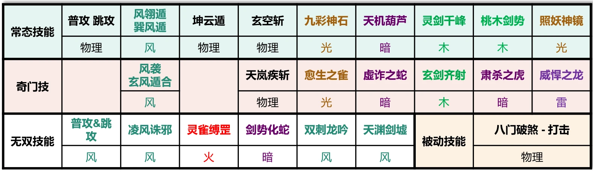
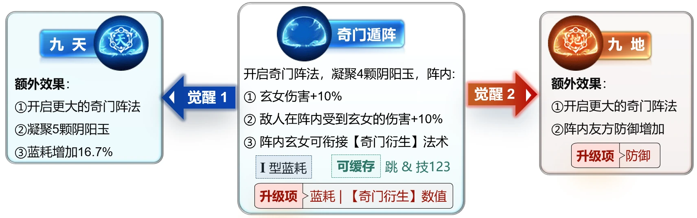
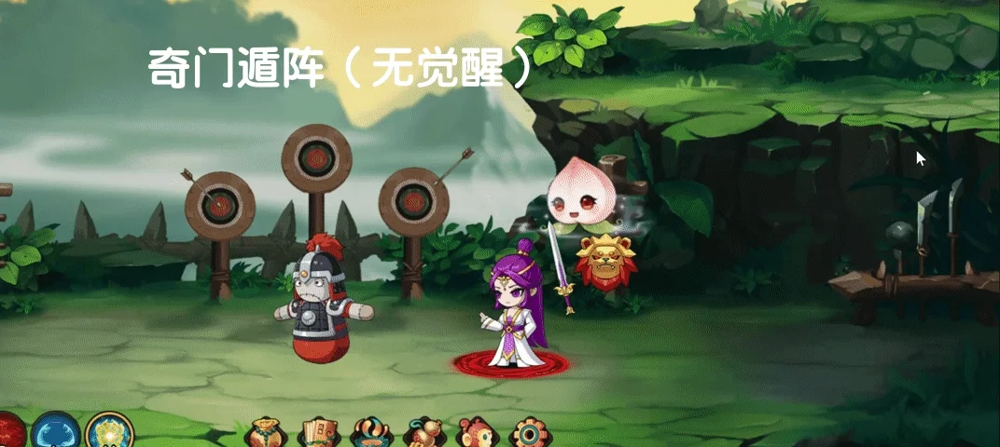
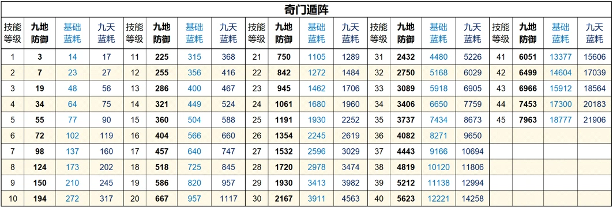
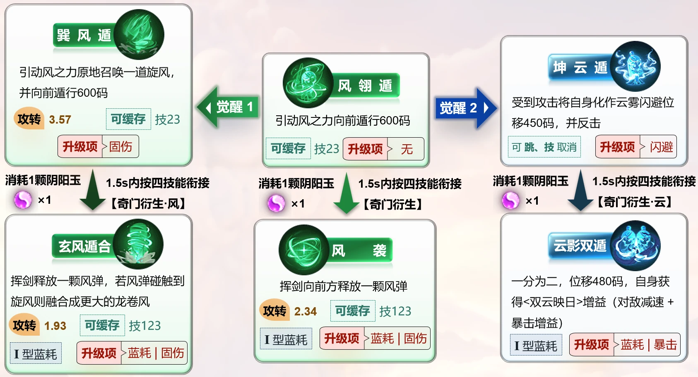
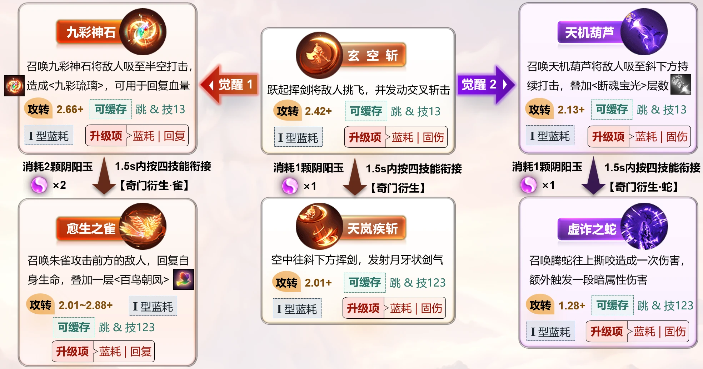
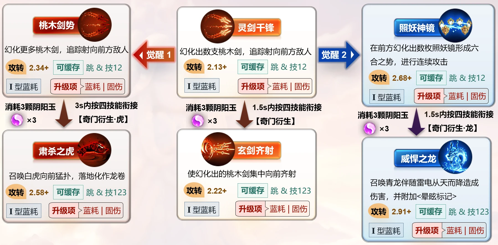
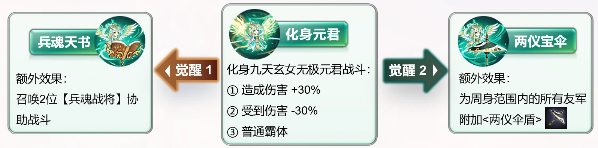
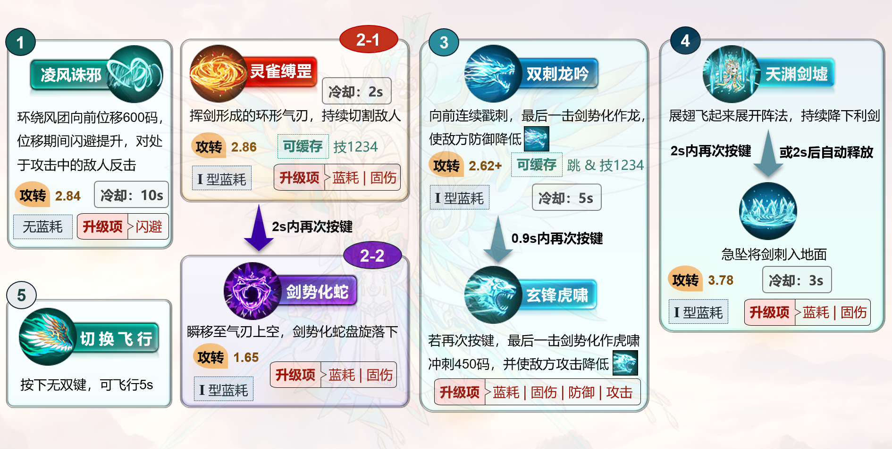
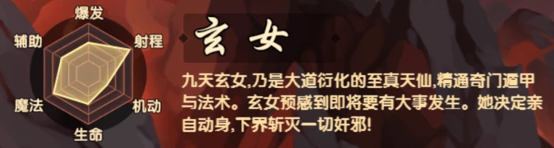

〇、目录/导引
本文正文内容将分为六章，这里是对六章内容的概述，便于有需求者跳跃式阅读。
- 一、基础说明：本章对玄女的基础机制和数据，如抗性、普攻数据等作介绍。
- 二、常态技能组：本章对玄女的常态技能组数值和机制作详细介绍，尽可能从客观角度描述每个技能的机制、数值解析、细节设定。
- 三、无双形态技能组：本章对玄女的无双技能组数值和机制作介绍。
- 四、被动技能：本章详细介绍玄女的被动技能。
- 五、角色设计思路评析：本章分析策划设计玄女的思路，包括数值、机制等方面的内容。
- 六、玩法推荐与性能评价：本章对玄女的玩法进行一定的推荐，在前面几章的客观结果基础上，结合游戏环境，推荐适合的技能觉醒、加点、被动选择。
一、玄女基础说明
属性抗性
天道角色抗性：无
攻击属性
见下表：
表1.1 玄女各攻击手段的属性

特殊机制
玄女有一些较为特殊的机制：
- 按键缓存：技能释放期间存在其他技能的预按键时间，例如：技能A可缓存技能B，意味着技能A释放期间按了技能B的按键，在技能A释放结束后会自动释放技能B（同理也有跳跃缓存），也因此玄女相比于其他角色更容易取消后摇。
- 多连击减伤：玄女普攻、跳攻以及部分技能，在对同一个目标的连击数达到一定数量时，后续连击的伤害会大幅度减少，减幅很高。因此讨论数据（总系数、攻转、蓝转等）时，本文统一考虑正常伤害的连击数作为相应输出的连击数。
- 奇门衍生：玄女四技能【九天遁地】开启阵法后，可于阵法内使用其他技能后衔接相应的【奇门衍生】法术，这种技能在本文中统称为"奇门技"。
基本术语
一些基本术语本文会反复使用，下面作简单介绍：
- 系数：单位攻击的伤害收益
- 用时：技能的完整释放时间
- 攻转：系数÷用时【净攻转：用时取完整释放时间计算的攻转；实际攻转：用时取实际用时所计算的攻转，因为一些技能能够取消后摇，所以实际释放时间 < 完整释放时间】
- 取消后摇：技能可取消后摇说明实际攻转会高于净攻转，本文中给出的攻转都是净攻转，如果可取消后摇，就在净攻转后加一个"+"号，例如："攻转：2.8+"表示净攻转是2.8，且可取消后摇使得实际攻转高于2.8
- 蓝转：技能固伤÷蓝耗，反应单位魔法的固伤收益
- 蓝耗类型：大体分为两种，分别为蓝耗增幅慢的I型和蓝耗增幅快的II型，反映在蓝转上就是蓝转下降趋势较慢和较快，目前所有角色的无双技能都是I型、悟空唐僧八戒萧嫣常态也都是I型，沙僧龙女白龙常态都是II型
- 升级项：技能升级所影响的内容
普攻 & 跳攻
- 普攻：系数 0.8，用时 0.433s，攻转 1.85
- 跳攻：系数 1，用时0.433s，攻转 2.31
- 天剑流星·普攻：系数 0.4167×3连击，用时 0.533s，攻转 2.34
在阵法内普攻会改为强化形态（见下图），分为四个部分：
- 两段伤害，每段系数 0.8，其中第2段伤害-75%
- 四段伤害，每段系数 0.4667，其中第3~4段伤害-87.5%
- 四段伤害，每段系数 0.4083，其中第4段伤害-90%
- 一段小额伤害和一段大额伤害：系数0.25 + 1.25
共计用时：2.033s，只考虑正常伤害的段数算得攻转 2.2
二、常态技能组
玄女技能和被动基本都围绕四技能展开，因此先从四技能开始介绍。
四技能 · 奇门遁阵


以自身为中心开启奇门阵法，并凝聚 4 颗阴阳玉（上限7颗），阵法内有以下效果：
- ① 玄女在阵内造成伤害+10%，普攻形态得到强化（阵法结束后该效果延迟2s消失）
- ② 敌人在阵内受到玄女的伤害+10%（阵法结束后该效果延迟2s消失）
- ③ 玄女在阵内释放其他技能时可按此技能键，消耗阴阳玉释放奇门技（奇门技等级 = 四技能等级）
- ④ 阵内重复开阵继承阴阳玉数量（阵法外开阵不继承），阴阳玉消耗完或阵法持续90s后阵法会关闭
- ⑤ 在冒险模式下，阵法展开时具有打击硬直。
觉醒1·九天（蓝耗+16.7%）
开启更大的阵法区域（x轴y轴范围各扩大15%），并凝聚5颗阴阳玉，且阴阳玉上限+1
觉醒2·九地（蓝耗不变）
开启更大的阵法区域（x轴y轴范围各扩大15%），且阵内友方防御力提升（阵法结束后该增益延迟2s消失）
注1：玄女在阵内对阵内敌人造成伤害提高20%，但注意第①点和第②点是需要区分的，例如玄女在阵法内打阵法外的敌人时增伤为10%；
注2：此技能释放用时1.533s，可缓存一二三技能或跳跃键取消约0.2s后摇；
注3：阴阳玉有两种状态：左图表示激活状态，可消耗阴阳玉，表示玄女在阵法内；右图表示未激活状态，无法消耗阴阳玉，表示玄女在阵法外；
注4：阵法的区域特效是半圆盘，实际上是一个矩形，右图玄女处于阵法特效外，阴阳玉仍处于激活状态，说明此时处于阵法内；
注5：只要玄女释放其他技能期间进入到阵法内，就可以消耗阴阳玉触发奇门技，奇门技会额外耗蓝，因此下文中计算奇门技的蓝转时，将蓝耗值修正为"奇门技蓝耗 + 原四技能蓝耗×消耗阴阳玉数÷4"，这样计算的蓝转本文称为"奇门·蓝转"。
表2.1 奇门遁阵技能数值

一技能 · 风翎遁

风翎遁（冷却10s，2次充能上限） :引动风之力向前遁行600码（用时：0.467s），在"奇门衍生·雀、蛇、龙、虎"释放结束前若使用可立即生效，则此技能陷入冻结6秒充能的代价。
风袭【奇门衍生】
消耗1颗阴阳玉，挥剑向前方释放一颗风弹，风弹遇敌会停下持续造成伤害
造成普伤：（0.1786*atk + 固伤）× 7连击
| 总系数 | 用时 | 攻转 | 蓝耗类型 | 升级项 |
|---|---|---|---|---|
| 1.2502 | 0.533s | 2.34 | I 型 | 蓝耗、固伤 |
觉醒一 · 巽风遁（冷却10s，2次充能上限）
引动风之力原地召唤一道旋风，并向前遁行600码，在"奇门衍生·雀、蛇、龙、虎"释放结束前若使用可立即生效，则此技能陷入冻结6秒充能的代价
造成普伤：（0.1852*atk + 固伤）× 9连击
| 总系数 | 用时 | 攻转 | 蓝耗类型 | 升级项 |
|---|---|---|---|---|
| 1.6668 | 0.467s | 3.57 | 不耗蓝 | 固伤 |
玄风遁合【奇门衍生·风】
消耗1颗阴阳玉，挥剑向前方释放一颗风弹，若风弹碰触到旋风则融合成更大的龙卷风，龙卷风持续2秒可抵挡远程子弹（龙卷风具有28%玄女血量，其他属性100%继承）
造成普伤：（0.1786*atk + 固伤）×3连击
（按3下算，后续每下伤害减少75.8%，保护分也相应下降）
| 总系数 | 用时 | 攻转 | 蓝耗类型 | 升级项 |
|---|---|---|---|---|
| 1.0314 | 0.533s | 1.93 | I 型 | 蓝耗、固伤 |
觉醒二 · 坤云遁（冷却10s，2次充能上限）
云雾环绕周身至多1.4s（可跳跃或使用其他技能提前取消），云雾环绕期间减伤99%，若受到攻击（受击瞬间有无敌帧），则触发以下效果：
- ① 反击攻击者（对小怪可造成强攻打击），造成普伤：0.2083*atk × 6连击，并对其造成<致盲，持续3s>（还有暂停AI的效果，且不加控制抗性）；
- ② 将自身化作云雾位移450码（根据按键方向位移，整个过程保持超级霸体）；
- ③ 自身获得：闪避提升2s（满级约 1.02/(1+1.02) = 50%闪避率）以及高额移速（共10层，每层+20%，每0.1s减少1层）
云影双遁【奇门衍生·云】
消耗1颗阴阳玉，一分为二，真身往按键方向瞬移480码，化身则往反方向持续移动（化身属性100%继承本体，可存在6s）。
此外，自身移速+20%并获得<双云映日>增益，下两次技能造成额外效果：
- ① 第一次伤害技能造成10层<减速6.6%>，每0.3s递减1层；
- ② 第二次伤害技能获得<暴击增益>
二技能 · 玄空斩

注：【玄空斩】【九彩神石】【天机葫芦】空中最多释放一次
玄空斩：跃起同时挥剑将敌人挑飞，并瞬间发动多道交叉斩击
造成普伤：（0.4306*atk + 单段固伤）× 6连击
（攻转的"+"号表示可取消后摇，实际攻转会更高，下文不再赘述）
| 总系数 | 用时 | 攻转 | 蓝耗类型 | 升级项 |
|---|---|---|---|---|
| 2.5936 | 1.067s | 2.42+ | I 型 | 蓝耗、固伤 |
天岚疾斩【奇门衍生】
消耗1颗阴阳玉，从空中往斜下方连续挥剑，发射数道月牙状剑气
造成普伤：（0.4354*atk + 单段固伤）× 4连击
| 总系数 | 用时 | 攻转 | 蓝耗类型 | 升级项 |
|---|---|---|---|---|
| 1.7416 | 0.867s | 2.01+ | I 型 | 蓝耗、固伤 |
觉醒一 · 九彩神石
召唤九彩神石将敌人吸至半空，持续打击，对命中的敌人造成<九彩琉璃>状态（自己或队友打击可回复一次生命），造成普伤：0.2583*atk × 11连击
| 总系数 | 用时 | 攻转 | 蓝耗类型 | 升级项 |
|---|---|---|---|---|
| 2.8413 | 1.067s | 2.66+ | I 型 | 蓝耗、回复量 |
注1：按住"↓"键将会降低腾空高度
注2：攻击<九彩琉璃>可回复一次生命值
愈生之雀【奇门衍生·雀】
消耗2颗阴阳玉，后跳并召唤朱雀攻击前方的敌人（长按增加后跳距离），
造成普伤：1.7417*atk × 1连击 + 0.1264*atk × 0~6连击
| 总系数 | 用时 | 攻转 | 蓝耗类型 | 升级项 |
|---|---|---|---|---|
| 1.7417~2.5001 | 0.867s | 2.01~2.88+ | I 型 | 蓝耗、回复量 |
有以下效果：
- ① 对小怪可造成强攻打击
- ② 【朱雀】命中敌人时可回复玄女生命值（见下表2.2），同时回复阵法内友军生命值（目前友军的回复有BUG，无论二技能和四技能点多少级都回复一样的数值）
- ③ 为自身叠加一层<百鸟朝凤>：在俯冲攻击结束后生成相应层数的【幼雀】追击敌人，最高6层（刷新层数时buff时间也刷新为30s），每一只【幼雀】命中敌人为玄女回复少量生命值（幼雀伤害是上面伤害公式的右半部分）
觉醒二 · 天机葫芦
召唤天机葫芦将敌人吸至斜下方，持续打击，
造成普伤：（0.2064*atk + 单段固伤）× 11连击
| 总系数 | 用时 | 攻转 | 蓝耗类型 | 升级项 |
|---|---|---|---|---|
| 2.2704 | 1.067s | 2.13+ | I 型 | 蓝耗、固伤 |
注1：造成<断魂宝光>层数（每段3层），累积100层时扣除目标保护分；
注2：按住"↓"键将会降低腾空高度
虚诈之蛇【奇门衍生·蛇】
消耗1颗阴阳玉，后跳并召唤腾蛇撕咬造成伤害（长按增加后跳距离），
造成普伤：1.1054*atk + 固伤
| 总系数 | 用时 | 攻转 | 蓝耗类型 | 升级项 |
|---|---|---|---|---|
| 1.1054 | 0.867s | 1.28+ | I 型 | 蓝耗、固伤 |
有以下效果：
- ① 对小怪可造成强攻打击
- ② 根据目标伤势（损失血量比），触发一段暗属性伤害，伤势越重，额外伤害越高：
暗属性伤害 = 26.16%造成伤害×伤势（若小怪的剩余血量低于造成伤害的1.53倍，则直接斩杀）
三技能 · 灵剑千锋

注：【灵剑千峰】【桃木剑势】【照妖神镜】离地最多释放两次
灵剑千锋：幻化出数支桃木剑，追踪射向前方的敌人
造成普伤：（0.2698*atk + 单段固伤）× 10连击
| 总系数 | 用时 | 攻转 | 蓝耗类型 | 升级项 |
|---|---|---|---|---|
| 2.698 | 1.267s | 2.13+ | I 型 | 蓝耗、固伤 |
有以下效果：
- ① 无法穿透妖王或魔王，可穿透小怪
- ② 共13段伤害，对同一目标第11~13段伤害下降82.86%(保护分也减少)，因此按10段计算
玄剑齐射【奇门衍生】
消耗3颗阴阳玉，使幻化出的桃木剑集中向前齐射
造成普伤：（0.3777*atk + 单段固伤）× 10连击
| 总系数 | 用时 | 攻转 | 蓝耗类型 | 升级项 |
|---|---|---|---|---|
| 3.777 | 1.7s | 2.22+ | I 型 | 蓝耗、固伤 |
注：对同一目标的第11段起伤害下降89.67%（保护分也相应减少），因此上述按10段计算
觉醒一 · 桃木剑势
幻化出更多桃木剑，追踪射向前方的敌人
造成普伤：（0.1481*atk + 单段固伤）× 20连击
| 总系数 | 用时 | 攻转 | 蓝耗类型 | 升级项 |
|---|---|---|---|---|
| 2.962 | 1.267s | 2.34+ | I 型 | 蓝耗、固伤 |
有以下效果：
- ① 无法穿透妖王或魔王，可穿透小怪
- ② 共26段伤害，对同一目标的第21段起伤害下降82.86%(保护分也减少)，因此按20段计算
肃杀之虎【奇门衍生·虎】
消耗3颗阴阳玉，召唤白虎向前猛扑，落地后化作利刃龙卷，
造成普伤：3.975*atk + 猛扑固伤 +（0.0456*atk + 龙卷固伤）× 9连击
| 总系数 | 用时 | 攻转 | 蓝耗类型 | 升级项 |
|---|---|---|---|---|
| 4.3854 | 1.7s | 2.58+ | I 型 | 蓝耗、固伤 |
具有以下效果：
- ① 对小怪可造成强攻打击
- ② 按前进方向键可以乘虎一同前进
觉醒二 · 照妖神镜
幻化出数枚照妖镜形成六合之势，持续反射光线对被包围的敌人进行连续攻击
造成普伤：（0.424*atk + 单段固伤）× 8连击
| 总系数 | 用时 | 攻转 | 蓝耗类型 | 升级项 |
|---|---|---|---|---|
| 3.392 | 1.267s | 2.68+ | I 型 | 蓝耗、固伤 |
威悍之龙【奇门衍生·龙】
消耗3颗阴阳玉，召唤青龙伴随雷电从天而降造成伤害，
造成普伤：（3.975*atk + 固伤）× 1连击
| 总系数 | 用时 | 攻转 | 蓝耗类型 | 升级项 |
|---|---|---|---|---|
| 3.975 | 1.367s | 2.91+ | I 型 | 蓝耗、固伤 |
具有以下效果：
- ① 附加<麻木标记>90s，累积2层后触发麻木，僵直3s
- ② 对免疫控制的目标造成伤害+10%
无双开启 · 化身元君

化身元君：化身为身着九色彩翠之衣背生双翼的九天玄女无极元君战斗一段时间，变身后全程霸体且造成伤害提高30%，受到伤害降低30%，造成普伤（强攻）：4*atk × 1连击
觉醒一·兵魂天书
化身无极元君后，召唤2位【兵魂战将】协助战斗，
- 【兵魂】的血量继承玄女60%，其他属性100%继承，兵魂全程霸体
- 【兵魂】一次普攻造成两段伤害，每段系数 0.5456
觉醒二·两仪宝伞
化身无极元君后，附带<两仪伞盾>10s：
- ① 为自己附加<两仪伞盾>，护盾值 = 19%玄女最大生命值
- ② 为周身范围内的的其他友方（召唤物外）附加<两仪伞盾(分摊版)>
其他友方护盾值 = 19%玄女最大生命值 × 分摊比例
分摊比例 = 0.3 + 0.7÷(区域内其他友方人数+1)，简言之：区域内其他友方人数 = 1，分摊比例 = 0.65；区域内其他友方人数 = 2，分摊比例 = 0.533……以此类推。
③ 使用坐骑后<两仪伞盾>剩余护盾值和时间会继承到坐骑身上（若马上下坐骑，还能继承回角色身上）
三、无双形态技能组
无双-普攻&跳攻
- 普攻：系数 1.3+0.85×2连击+0.567×3连击+2.5 = 7.201，总用时 2.467s，攻转 2.92
- 跳攻：系数 1+0.9+( 0.367×3连击+1.6 ) = 4.601，总用时 1.6s，攻转 2.88
注：上述跳攻系数中加括号的表示下落的部分，跳攻期间按住"↓"+普攻可下落

无双技一 · 凌风诛邪（冷却10s）
环绕风团向前位移
有以下效果：
- ① 位移期间闪避大幅提升（具体见下表3.1，点满约 5.23/(1+5.23) ≈ 84%闪避率）
- ② 对沿途处于【攻击中】的敌人造成多段风刃反击，造成普伤：0.6*atk × 3连击，并造成<致盲3s，视野丢失>（还有暂停AI的效果，且不加控制抗性），若敌人为小怪则额外造成强攻打击。
| 总系数 | 用时 | 攻转 | 蓝耗类型 | 升级项 |
|---|---|---|---|---|
| 1.8 | 0.633s | 2.84 | 不耗蓝 | 闪避 |
无双技二 · 灵雀缚罡（冷却2s）
挥剑化作朱雀盘旋形成的环形气刃，持续牵引切割敌人。
造成普伤：（0.238*atk + 单段固伤）× 10连击
| 总系数 | 用时 | 攻转 | 蓝耗类型 | 升级项 |
|---|---|---|---|---|
| 2.38 | 0.833s | 2.86 | I 型 | 蓝耗、固伤 |
有以下效果：
- ① 对同一个怪物的第11段起伤害下降94.74%（保护分也相应减少），因此按10段计算
- ② 两秒内可再次按键释放【剑势化蛇】，距离气刃太远无法释放二段（往后退几步就无法触发）
无双技二 · 二段 · 剑势化蛇
再次按键，瞬移至气刃上空，剑势化蛇盘旋落下，
造成普伤：1.706*atk + 固伤
| 总系数 | 用时 | 攻转 | 蓝耗类型 | 升级项 |
|---|---|---|---|---|
| 1.706 | 1.033s | 1.65 | I 型 | 蓝耗、固伤 |
效果：根据目标伤势（损失血量比），额外触发暗属性伤害，伤势越重，额外伤害越高，
暗属性伤害 = 34.48%造成伤害×伤势（若小怪的剩余血量低于造成伤害的1.7倍，则直接斩杀）
无双技三 · 形态1 · 双刺龙吟（冷却5s）
提起双剑向前连续戳刺，最后一击剑势化作龙吟重击，
造成普伤：（0.3571*atk + 戳刺固伤）× 7连击 +（1.875*atk + 重击固伤）× 1连击
| 总系数 | 用时 | 攻转 | 蓝耗类型 | 升级项 |
|---|---|---|---|---|
| 4.3747 | 1.667s | 2.62+ | I 型 | 蓝耗、固伤、防御、攻击 |
效果：对敌人造成<龙吟·裂御>，减少防御，持续4.633s
无双技三 ·形态2 · 玄锋虎啸
自身额外向前位移450码，并将效果改为对沿途敌人造成<虎啸·战栗>，减少攻击，持续4.633s
注：无双技三是双形态技能，玩家可决定释放形式，仅按键1次释放【双刺龙吟】，按键两次释放【玄锋虎啸】，这两个技能实际是一攻一防的选择：龙吟是破防增伤、虎啸是"位移+削攻"的防守
无双技四 · 天渊剑墟（冷却3s）
此技能分为三个步骤：
- 第1步（用时0.267s）：展翅飞向空中（跃起350码，若按前进键则额外向前160码）
- 第2步（用时1.2s~2s）：在下方展开阵法，持续锁定阵法里的每一个敌人降下利剑（此阶段保持超霸）
- 第3步（用时0.933s）：最终急坠将剑刺入地面，阵法内充满破土而出的利剑。
造成普伤：0.627*atk × 10连击 +（2.8*atk + 下坠固伤）× 1连击
| 总系数 | 用时 | 攻转 | 蓝耗类型 | 升级项 |
|---|---|---|---|---|
| 9.07 | 2.4s | 3.78 | I 型 | 蓝耗、固伤 |
效果：
- ① 可再次按键快速下坠收招（1.2s前按键会落剑至1.2s下坠，1.2s后按键会立刻下坠）
- ② 落剑无固伤，且从第11段起伤害-94.74%（保护分也相应降低），因此我们按10下落剑计算（落剑1.2s时已完成10下落剑）
无双技五 · 切换飞行
切换进入飞行模式持续5秒
- 飞行模式受到伤害+30%，闪避-30%
- 每次无双限制释放一次，神魔战场：每次存活可使用一次
注：根据增减伤叠加算法，飞行受到伤害+30%与无双形态30%免伤叠加后，表现为免伤11.4%
四、被动技能
第一行被动
第二行被动
阴阳续玦
通过逐颗消耗阴阳玉的测试，在保持阵法不销毁的情况下：
- 1阶：在消耗第5颗、第9颗阴阳玉时，分别回复了1颗阴阳玉（消耗9颗回复2颗）；
- 2阶：在消耗第4颗、第7颗阴阳玉时，分别回复了1颗阴阳玉（消耗7颗回复2颗），
上述结果可稳定复现，这说明此技能描述中说的"概率"并不恰当，我们可以简单概括一下：
- 1阶：每消耗4.2颗阴阳玉，回复1颗阴阳玉；（此处"4.2"只是任取介于4到4.5之间的数）
- 2阶：每消耗3.2颗阴阳玉，回复1颗阴阳玉。（此处"3.2"只是任取介于3到3.5之间的数）
但此被动有【卡勾玉】的技巧：如果消耗阴阳玉同时阵法销毁，那么消耗的阴阳玉就算进下个阵法内使用奇门技进行结算，由于这个技巧，可诞生出以下连招：
- 第1步：【九天】->获得5颗阴阳玉，接着消耗2颗阴阳玉后，使用【3技能及其奇门技】->消耗3颗阴阳玉（这3颗消耗量留至下次使用奇门技结算）
- 第2步：【九天】->获得5颗阴阳玉，使用第一次【3技能及其奇门技】->消耗3颗阴阳玉并回复1颗，此时还有3颗阴阳玉，使用第二次【3技能及其奇门技】->消耗3颗阴阳玉（这3颗消耗量留至下次使用奇门技结算）
- 第3步：回到第2步循环
这套连招，不论【阴阳续玦】是1阶还是2阶都可实现。
两仪镇邪
每消耗1颗阴阳玉获得1层暴击率加成（每层独立5.3s），可叠9层（1阶+3.6%/层 ，2阶+4.8%/层）
点评：这是玄女真数值的体现，这是实打实的"暴击率"，叠满可有43.2%的暴击率，而且这种加成是不像白龙的阴雷易伤，出现共享的情况，这纯粹是个人输出的大幅提升。
第三行被动
八门破煞
每消耗1颗阴阳玉获得1层<八门破煞>，阵法销毁清空<八门破煞>层数触发相应效果：
- 1~10层：获得相应层数的穿透强化（每层独立计时17s），
穿透增加值 = 初始穿透×穿透比例 + 初始攻击×攻击比例
穿透比例 = 1阶1.59%/层，2阶2.13%/层；攻击比例 = 1阶0.32%/层，2阶0.43%/层
- 3~10层：破阵时额外造成范围打击，打击次数 = 层数（打击系数：1阶 1.013，2阶 1.35）
- 8~10层：造成<沉默：无法使用技能>，持续2s
阵法销毁包括以下几种情况：开坐骑、开无双、在阵法外开阵法、阴阳玉消耗完、阵法持续时间结束
道魄蕴玉
① 释放阵法时，若自身血量不低于25%，按四技能蓝耗的一定比例（1阶36.2%，2阶28%）减少自身血量（需乘场景生命倍率），额外获得1颗阴阳玉
② 阵法消失时若还存在阴阳玉，则回复血量和魔法：
恢复血量 = 比例×四技能蓝耗×场景生命倍率，恢复魔法 = 比例×四技能蓝耗
1阶比例 = 1.2%×阴阳玉数（最高取6%），2阶比例为1.6%（最高取8%）
最高比例也说明，返还比例到达五颗阴阳玉时已经是极限了，而且回收血量是远低于消耗血量的。
③ 阴阳玉上限+1
灵阵急启
① 开局获得1层<灵阵急启>，接着每隔[1阶: 17s；2阶: 10s] 获得1层<灵阵急启>，最多叠加2层。
② 当释放【奇门遁阵】时，将消耗一层【灵阵急启】增益，使【奇门遁阵】的释放时间大幅缩短（释放用时约0.7s)。
五、角色设计思路评析
首先来看官方评价：

- ① 射程-5：玄女主打法术，技能范围都很大，只是没有一个超远距离的技能（跟水魔爆、木魔舞-连射等还是有差距的）
- ② 机动-2：玄女需要开启阵法才能使用奇门技，机动性受到限制
- ③ 生命-3：玄女的生命值仅高于唐僧和萧嫣
- ④ 魔法-4：从被动【魔法上限和回魔加成】和技能的I型蓝耗的设计来看，玄女是主打魔法的
- ⑤ 辅助-3：玄女的辅助功能主要体现在【坤云遁】的<致盲>、【九彩神石】及其奇门技的回复血量上、【九地】范围防御加成
- ⑥ 爆发-3：这个给低了，可能这个评级是测试服给的，被动2-2【两仪镇邪】一开始是增益回血和回魔属性，上线后改成高额的暴击率加成，一跃成为最容易打出暴击的角色，爆发绝对不止3分。
下面从本文介绍的内容进行分析：
①取消后摇：玄女常态技能几乎都能取消后摇，取消幅度大体处于中幅，能让秒伤提高10%~30%不等；
② 缓存技能：玄女是所有角色唯一一个可以在技能释放期间缓存下一个技能的角色，因此玄女是非常容易保持霸体状态；
③ 攻转：单位时间的攻击收益，净攻转处于中低档层次，但考虑到"缓存技能+取消后摇"的条件，只要有提前缓存技能，实际攻转是处于常规攻转（3点左右）层次，可见策划设计攻击系数时是考虑到了"缓存技能+取消后摇"的情况设计的。这也注定了玄女无法像龙女那样，将常规净攻转通过取消后摇的方式转化为极高的实际攻转。
④ 蓝转：每滴蓝的固伤收益，玄女是I型蓝耗，蓝转一定是比II型蓝耗的沙僧、龙女和白龙高的。玄女分两种技能的蓝转（初始技和奇门技），其中奇门技的蓝转（奇门·蓝转）是相对较高的（仅次于唐僧），这也体现了策划的设计思路：推荐玩家尽可能使用奇门技；
⑤ 奇门阵法：不同于龙女攒剑气触发技能二段，玄女是通过四技能作为启动器，才能使用各种奇门技的，触发各种机制效果，玩法可谓五花八门。但也会带来缺点：就是过度依赖阵法，想操作就必须找时间开阵法；
值得注意的是，玄女的消耗阴阳玉的奇门技与龙女消耗剑气的提高技能伤害是有很明显区别的，除了积攒阴阳玉和剑气的方式不同外，玄女的奇门技严格来讲是一个技能，没有脱离单个技能设计范畴（差别在于阵法内玄女伤害提高了，奇门技的蓝转更高），而龙女消耗剑气触发二段或释放金魔剑，是实打实地提高伤害。
⑥ 被动技能：除了第一行被动外，其他被动都是围绕阵法进行设计的，可以说，策划设计点都是在玄女的阵法上，能让效果更加集中。但缺点也很明显，这也是所有新角色的通病：被动技能和常态相捆绑，开启无双后主要被动都不生效了，以唐僧、龙女、白龙、萧嫣和玄女为代表。（PS：悟空和沙僧还是经过几波优化才设计好被动与无双形态的关联）
⑦ 冒险模式优待：玄女在各个技能处加了对小怪的强攻效果，更有利于玄女在pve模式下完成聚怪的动作，还有开阵法加僵直的效果也是弥补此类技能无法控怪的缺点，相比于萧嫣带来的主线数值整体下滑的一刀切，显得更高明 。
整体来讲，玄女开阵法 = 增伤 + 获取阴阳玉 + 奇门技(得机制+增蓝转) + 被动触发器， 其实可将玄女的强度概括为消耗阴阳玉的速率，消耗阴阳玉速率快 = 使用奇门技快 + 被动触发频繁(暴击率增加、炸阵等) = 强度高，而要提高这个速率也将是玄女未来发展方向，最简单的方式莫过于"缓存下一个技能+取消后摇"这个方式，这也是策划给玩家开通的一条路。
六、玩法推荐与性能评价
1. 觉醒&被动&加点
下面关于加点的推荐仅给"低/中/高"三等，具体多低多高，需要根据玩家自身属性决定的，对于高战玩家而言，接近满级可能才算高，但对于低战玩家来讲，蓝未必够用，需要适当下调。这三个加点等级只是给大家一个技能加点趋势的建议。
一技能【巽风遁vs坤云遁】
两个觉醒主要区别在于，【主动位移】&【防守位移】的取舍。
【巽风遁】是主动位移（跟水幻影一样），在"奇门衍生·雀、蛇、龙、虎"释放结束前若使用可立即生效，则陷入冻结6秒充能的代价。 奇门技【玄风遁合】能抵挡子弹，用处不大。个人觉得只有【奇门衍生·虎】释放结束前使用【巽风遁】冻结6秒充能才算合理，因为这相当于立刻使用了两段位移，其他三个奇门技着实没理由加6s冻结充能。
【坤云遁】是防守位移，需要预判被打才会位移出去，造成<致盲+AI暂停>，还会获得短暂闪避和移速加成，能尽可能快地拉开距离。衔接奇门技【云影双遁】还会产生第二段位移，外加反方向分身迷惑。
相对而言，【坤云遁】操作性更强，但需要依靠预判，不过玄女有缓存技能机制，玩家可以在别的技能释放期间选择缓存这个防反技。如果不喜欢防反位移的，那就直接"水幻影"，选【巽风遁】。
该技能不耗蓝，加点直接满级。
二技能【九彩石vs天机葫芦】
两个觉醒都比觉醒前多了【按"↓"键可降低腾空高度】的性能，区别在于，【回复血量】&【输出】的取舍。
【九彩石】及奇门技【愈生之雀】是舍弃固伤，换取回复量，且此觉醒打怪的保护分极少，适合pve模式拖白条。而且这个觉醒能消耗2颗阴阳玉，能提高阴阳玉消耗速率。【愈生之雀】本身就能很好的聚怪，加上对小怪的强攻效果，聚怪效果非常好。
【天机葫芦】及奇门技【虚诈之蛇】，打白条比另一个觉醒快很多，显得<叠层减少保护分>这个机制多余，而且此觉醒的伤害还不如原技能，不推荐使用。
推荐觉醒【九彩石】，建议加点低或不点，因为回复量不高，回复速率和蓝转血指标都不如唐僧的【天降甘露】。
三技能【桃木剑vs照妖镜】
两个觉醒区别在于，【定位追踪+奇门位移】&【定位站桩】的取舍。
【桃木剑】连击非常高，此觉醒数值也不高，且无法穿透魔王和妖王。奇门技【肃杀之虎】让玄女具有位移性能，且聚怪效果非常好，对小怪具有强攻效果。
【照妖镜】及奇门技【威悍之龙】是定位站桩技能，整体伤害比上一个觉醒高，适合打不动的单位（对无法控制的单位还能增伤10%），比如系列关底BOSS、阵主、水晶等。
推荐主线模式选【桃木剑】，如果遇到建筑类单位，更建议带【照妖镜】。神魔里需要拆矿，且水晶免疫控制，神魔推荐带【照妖镜】。此技能是玄女的主要输出技能，加点建议给高。
如果携带【九天】觉醒的阵法和【阴阳续玦】被动，可以运用【卡勾玉】技巧，随后循环【开阵法+两次三技能】的炮台玩法。
四技能【九天vs九地】
两个觉醒的区别在于，【获取多1个阴阳玉】&【团队防御】的取舍。
【九天】的蓝耗增加16.7%，但阴阳玉从4颗变成5颗（增加了25%），意味着奇门技的蓝转进一步得到提高，也适应了"提高阴阳玉消耗速率"这个方向。
【九地】蓝耗不变，额外多给一个阵法内友方防御提升的效果，在各模式下用处都不大。
推荐觉醒【九天】点高，因为此技能等级决定了所有奇门技的等级。
开启无双【兵魂vs两仪伞】
【兵魂】召唤2个带血量的兵魂进行战斗，相当于让玄女获得一个离体输出的机会，和白龙的【化身天龙·雷霆万钧】一样造成离体伤害，提高单位时间的输出量，但可惜这两个兵魂带血量，可以被消灭，不像【雷霆万钧】那么稳定输出。（注：兵魂打白条极少）
【两仪伞】给团体加护盾，这种效果在冒险模式里用处不大，但在血量翻倍的模式，如仙位、天道、阵法里，护盾值随着一起翻倍，会显得数值很高。
想提高伤害推荐觉醒【兵魂】，毕竟加白条极少；【两仪伞】适合在天道、阵法里使用。
第一行被动【七星沐炁vs天剑流星】
【增加魔法回魔】&【提高空中性能】的取舍。
【七星沐炁】提供团队的魔法上限和回魔加成，这两个属性是注定在版本末期被舍弃的，原因很简单：角色技能蓝转从20级开始持续下滑，只是I型的下降较慢，II型下降较快。另一方面，魔法上限属于一次性提升，在长线作战情况下这个提升几乎等于没有，说实在的，还不如回血！
【天剑流星】，八位角色里第四个【空中连击】，同样改变跳攻的形式和空中增伤。跳攻形式变为可以自动锁敌，空中增伤效果也比加魔法回魔更在实用。
对于低战力玩家，技能整体加点偏低，蓝转更高，可以带【七星沐炁】加魔法上限和回魔，但到了游戏发展后期也不建议带这个被动了。这里可以补充一下，这个游戏发展后期怎么判定呢？就是玩家自己携带【七星沐炁】，如果能让玩家给自己的主要输出技能多点1级，那这个被动带的还是有价值的，如果带了这个被动都不能多点1级，那这个被动已经没有必要携带了。高战力玩家推荐带【天剑流星】，因为蓝量较为充裕的，不如直接获得实打实的伤害提高，保证收益。
第二行被动【阴阳续玦vs两仪镇邪】
【续玉】&【暴击率】的取舍。
【阴阳续玦】提供额外的阴阳玉可能性，携带这个被动，可使用【卡勾玉】技巧，配合【九天】，可使用"炮台三技能+奇门强化"的输出手段。（也因为【卡勾玉】的技巧存在，不推荐升阶）
【两仪镇邪】消耗阴阳玉获得1层4.8%暴击率加成，可叠9层，每层独立时间。这是真数值——暴击率（一般来讲，同等增幅的暴击加成和暴击率加成，后者比前者优很多），还给的相当大方，带这个被动，在神魔里是能明显感觉到玄女暴击频率高很多的。一般能保证3~6层暴击率，也就是常驻14.4%~28.8%的暴击率。达到9层的方式：携带【道魄蕴玉】被动以及【九天】阵法，先攒满9块阴阳玉，然后释放三次【3技能+奇门技】，第三次的奇门技能还有小量时间享受到9层暴击率加成，然后9层就会降到6层。
推荐选择【两仪镇邪】，没得挑，这是铁打的数值，不管你是低战还是高战，这暴击率终归享受到的。除非你是顶战玩家，本身就100%暴击率（注：一般最新版本的顶战玩家打最新的主线也不会百暴，顶天七八成的暴击率）
第三行被动【八门破煞vs道魄蕴玉vs灵阵急启】
【炸阵】vs【加勾玉】vs【速开阵】的取舍。
【八门破煞】总结就是炸阵，按照层数给效果，1~10层给穿透强化，加强后多了个攻转穿比例，数值不高；3~10层还造成相应的打击次数，相当于给玄女一个离体输出技，是一个提升攻转的重要手段；8~10层还额外造成短暂沉默效果，只能算是锦上添点花，在神魔里可以攒够8层以上的层数，埋个阵法让魔王吃沉默。
【道魄蕴玉】释放阵法消耗生命值，额外获得1颗阴阳玉，这比【阴阳续玦】更稳定获得阴阳玉；阵法消失时若还存在阴阳玉，则回复生命和魔法，这个回复值比前面消耗的生命值低，所以只能算是锦上添点花的效果。
【灵阵急启】能显著加快开阵法速度，适合PVE模式连招的。
PVE模式推荐带【道魄蕴玉】，稳定获得阴阳玉，减少开阵法的频率（【八门破煞】会带白条）；在对付建筑类单位（系列关底BOSS、阵主、水晶）时，可带【八门破煞】提高伤害。
无双技能一【凌风诛邪】
位移+闪避，还是"烈焰闪式"模子，此技能不耗蓝，加点拉满就对了，将闪避率顶到84%，位移期间对处于【攻击中】的敌人造成打击，对小怪还会造成三段打击。这种设计有个好处，使用该技能位移，打到水晶不会暴露视野。
无双技能二【灵雀缚罡->剑势化蛇】
挥剑化作朱雀盘旋形成的环形气刃，持续牵引切割敌人，2s内再次按键会触发二段，下降落入气旋当中。由于这个二段按键时机较长，既可以通过二段拉y轴上台阶（此技能冷却2s，是发挥玄女无双灵活性的重要技能），也可以在期间衔接别的技能实现长距离位移。
由于此技能主要用于走位，不推荐加点。
无双技能三【双刺龙吟 & 玄锋虎啸】
这是一个双形态技能，点一下是【双刺龙吟】，点两下（可分开点，但要快）是【玄风虎啸】，是主要输出技能，还可以下降防御或下降攻击，推荐点满。
无双技能四【天渊剑墟】
纯输出技，点满就对了。
2. 推荐连招
PVE输出思路：多使用三技能及其奇门技，做法是先开阵法，可使用【九彩石】及【奇门·愈生之雀】聚怪，接着使用【桃木剑】或【照妖镜】及奇门技进行输出；
PVE抓空挡：使用【桃木剑】远距离将妖王击飞、【九彩石】及【奇门·愈生之雀】强攻聚集小怪。
爆发配招1
觉醒【照妖神镜、九天】、被动【天剑流星、两仪镇邪、道魄蕴玉】
- 连招循环：跳->【九天】->【照妖镜，奇门·威悍之龙】2次 -> 落地 -> 循环
- 加点说明：【照妖神镜】【九天】根据自身蓝量点高
- 原理：跳是为了配合【天剑流星】的空中增伤；【九天】与【道魄蕴玉】一次开阵法就获得6颗阴阳玉，使用两次【照妖镜+奇门技】刚好用完，可保持3~6层暴击率增加；加点拉满是为了短时间内将伤害全打出去，适合阵法短时间内抢伤害使用。
爆发配招2
觉醒【照妖神镜、九天】、被动【天剑流星、阴阳续玦、八甲破煞】
- 首先需要【卡勾玉】：【九天】->消耗2颗阴阳玉->【照妖神镜及其奇门技】
- 接着连招循环：跳->【九天】->【照妖神镜，奇门·威悍之龙】2次 -> 落地 -> 循环
- 加点说明：【照妖神镜】【九天】根据自身蓝量点高
- 原理：跳是为了配合【天剑流星】的空中增伤； 通过被动【阴阳续玦】和【卡勾玉】技巧，保证后续稳定6层阴阳玉消耗，使用两次【照妖镜+奇门技】刚好用完，触发6层炸阵【八门破煞】（提高攻转）；加点拉满是为了短时间内将伤害全打出去，适合阵法短时间内抢伤害使用。
个人更推荐此配招用在天机领域抢伤害，因为使用流邪配合炸阵能达到比【爆发配招1】更高的攻转收益。
稳定站桩输出配招
觉醒【九彩神石、照妖神镜、九天】、被动【天剑流星、两仪镇邪、八甲破煞】
- 连招循环：【九天】->【九彩神石（按"↓"键）】->【奇门·愈生之雀（必要时长按增加后跳距离）】->【照妖神镜】->【奇门·威悍之龙】->落地 ->循环
- 原理：【愈生之雀】消耗2块玉，【威悍之龙】消耗3块玉，一套连招触发5层炸阵【八甲破煞】（提高攻转）；从【九彩石】开始，玄女一直处于空中，不需要穿插跳跃按键，具备【天剑流星】的空中增伤条件；【愈生之雀】可以堆【幼雀】数量，提高攻转，且加连击评分极快；配合【两仪镇邪】实现常驻2~5层暴击率提升，且使用主要输出技【威悍之龙】时，刚好堆到5层暴击率。
- 加点（10阶战场，仅供参考）：【九彩石】1级、【照妖镜】25~33级、【九天】22~29级（34技能不建议同时点高）
此套连招适合神魔拆矿使用，拆矿速率高，还能边拆边回血。
完